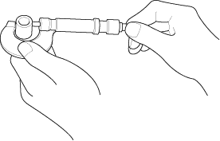
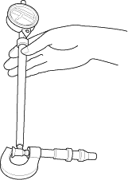
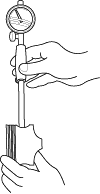
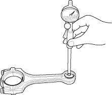

Inspection
NOTE: Inspect the piston, piston pin, and connecting rod when they are at room temperature.
- Measure the diameter of the piston pin.
Piston Pin Diameter:
Standard (New):
21.961 - 21.965 mm
(0.8646 - 0.8648 in.)
Service Limit:
21.953 mm (0.8643 in.)

- Zero the dial indicator to the piston pin diameter.


- Check the difference between the piston pin diameter and piston pin hole diameter in the piston.
Piston Pin-to-Piston Clearance:
Standard (New):
-0.005 to +0.002 mm
(-0.00020 to +0.00008 in.)
Service Limit:
0.005 mm (0.0002 in.)

- Measure the piston pin-to-connecting rod clearance.
Piston Pin-to-Connecting Rod Clearance:
Standard (New):
0.005 - 0.015 mm
(0.0002 - 0.0006 in.)
Service Limit:
0.02 mm (0.0008 in.)
